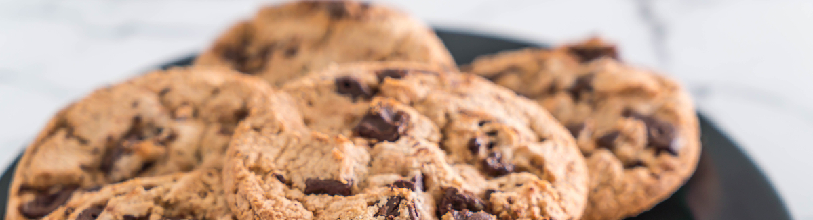

Receita de cookie

Ingredientes
- 125g de manteiga
- 3/4 xícara de açúcar
- 1/2 xícara de açúcar mascavo
- 1 ovo
- 1 e 3/4 de xícara de farinha
- 1 colher de chá de fermento
- 300g de chocolate picado
- 1 colher de chá de essência de baunilha
Modo de preparo
- Pré aquecer o forno a 250 graus
- Misturar a manteiga, os dois açúcares e a essência de baunilha
- Adicione o ovo batido e misture
- Acrescente farinha aos poucos e misture pode ser na batedeira
- Adicione o fermento e misture
- Coloque o chocolate
- Faça bolinhas e asse no forno preaquecido, sobre o papel manteiga
- Deve ficar pronto em 15 a 20 minutos
Voltar